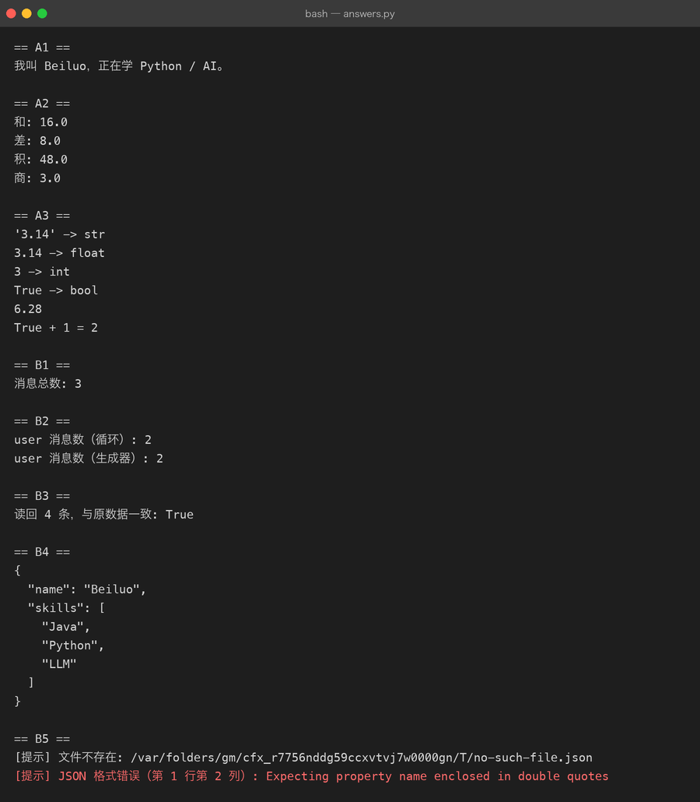

Exercises 01-basic — Milestone 01-02 配套练习
对应：
milestones/01-variables.md（🎓 已学习）+milestones/02-list-dict-json.md（🎓 已学习） 规则：亲手敲，不复制粘贴。每题先自己写，跑通后再对照 milestone 里的示例。 完成一题就在题号前打 ✅。写完的代码放本目录（如01_answers.py）。 本次判卷：已用answers.py跑通全部 8 题并生成真实运行截图，8/8 标记完成 🎓。
A. 变量与类型（Milestone 01）
- [x] A1 写程序：输入你的名字和学习方向，输出一句话自我介绍（用 f-string）
- [x] A2 让用户输入两个数字，打印它们的和、差、积、商（想想
input()返回的是什么类型） - [x] A3 打印
type()验证："3.14"、3.14、3、True各是什么类型？再把"3.14"转成 float 做加法
B. List / Dict / JSON（Milestone 02）
- [x] B1 建一个
messages列表，装 3 条 AI 对话消息（每条是{"role": ..., "content": ...}的 dict），打印消息总数 - [x] B2 在 B1 基础上追加一条 user 消息，再统计
role == "user"的消息有几条（提示：循环或列表推导式） - [x] B3 把 B1 的
messages用json.dumps存成文件，再用json.load读回来，验证内容一致 - [x] B4 给定
data = {"name": "Beiluo", "skills": ["Java", "Python"]}，追加一个 skill 后打印完整 JSON（缩进 2 格） - [x] B5（挑战） 读入一个 JSON 文件，安全处理「文件不存在」和「JSON 格式错误」两种情况（打印友好提示而不是崩溃——提前偷看 Milestone 06）
验收标准
A1-A3 + B1-B4 全部亲手跑通 = Milestone 01 ✅ + Milestone 02 已标记 🎓。 B5 挑战题也已在 answers.py 中实现并跑通。
参考答案
写完再看：answers.py（带 Java 类比注释）
python3 answers.py # 用示例数据跑一遍，看输出
python3 answers.py --interactive # 交互模式，真的等你输入参考答案的运行输出（真实跑出来的）：

规矩：先自己敲、跑通了再对照。只准看卡住的那一个函数，不要整份抄。